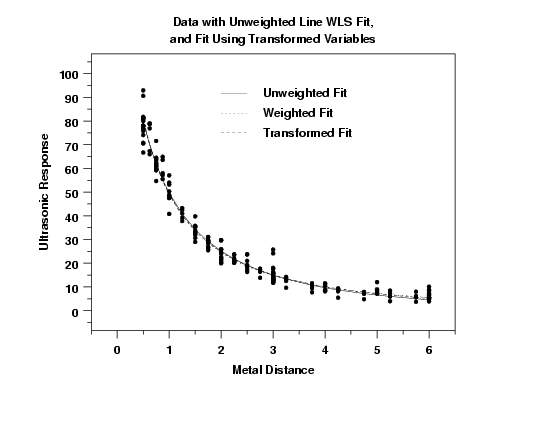

|
4.
Process Modeling
4.6. Case Studies in Process Modeling 4.6.3. Ultrasonic Reference Block Study
|
|||
| Three Fits to Compare |
It is interesting to compare the results of the three
fits:
|
||
| Plot of Fits with Data |
The first step in comparing the fits is to plot all three
sets of predicted values (in the original units) on the same
plot with the raw data.

This plot shows that all three fits generate comparable predicted values. We can also compare the residual standard deviations (RESSD) from the fits. The RESSD for the transformed data is calculated after translating the predicted values back to the original scale.
RESSD From Unweighted Fit = 3.361673
RESSD From Transformed Fit = 3.306732
RESSD From Weighted Fit = 3.392797
In this case, the RESSD is quite close for all three fits
(which is to be expected based on the plot).
|
||
| Conclusion | Given that transformed and weighted fits generate predicted values that are quite close to the original fit, why would we want to make the extra effort to generate a transformed or weighted fit? We do so to develop a model that satisfies the model assumptions for fitting a nonlinear model. This gives us more confidence that conclusions and analyses based on the model are justified and appropriate. | ||

{kind=link}